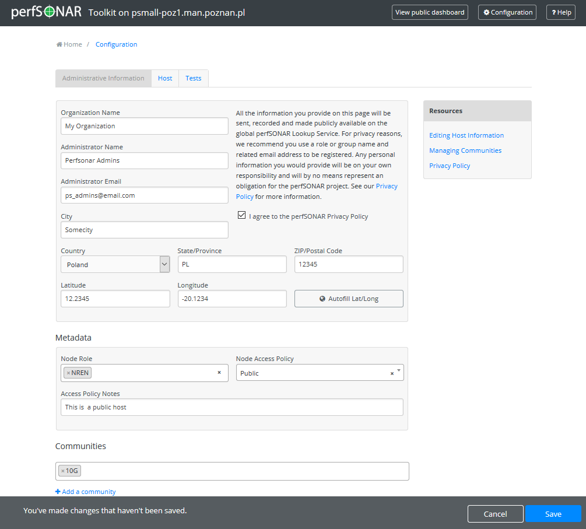
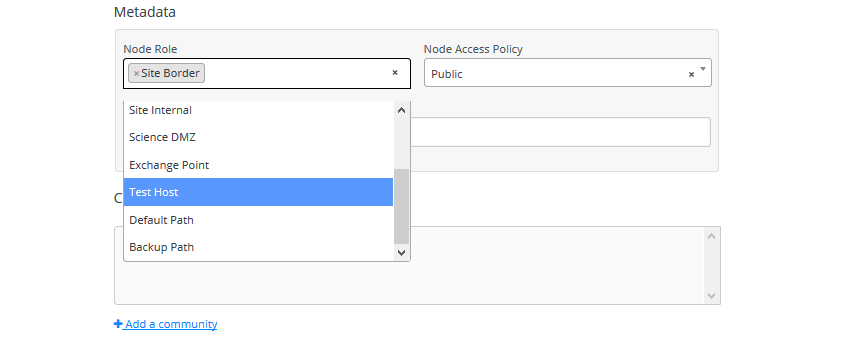
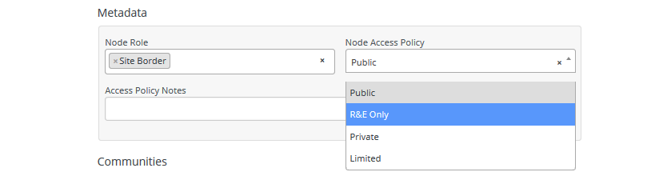
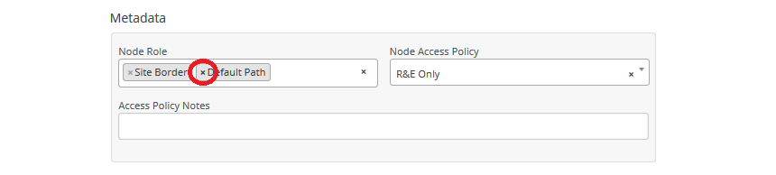
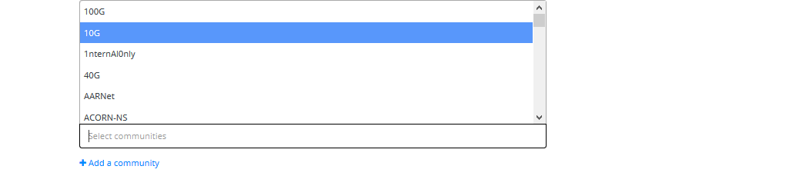
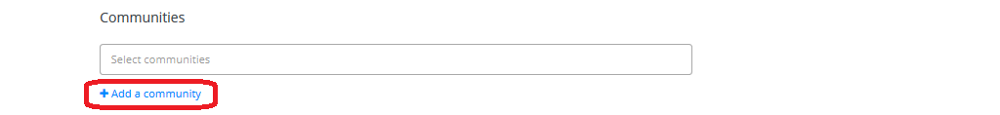
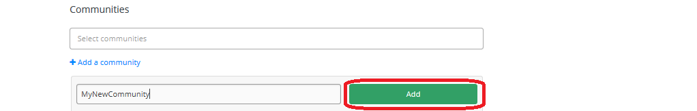
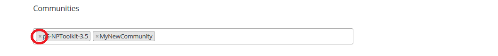

The Toolkit allows you to enter contact and location information about the host. This information will not only display on the main page but will be published in the perfSONAR Lookup Service allowing other testers to find your host. This page contains information on editing this information through the web interface.
Open http://<hostname> in your browser where <hostname> is the name of your toolkit host
Click on Edit in the host information section of the main page (A) or Configuration button in the right-upper corner (B) and login as the web administrator user created in the previous step.
See also
See Managing Users for more details on creating a web administrator account
On the Administrative Information tab enter the requested information in the provided fields.
Special Topic: Administrative Information fields
- Organization Name
The name of the organization to which this host belongs
- City
The city where the host resides
- State/Province
The state, province or other country-specific region where the host resides. May be the 2-letter abbreviation if applicable.
- Country
The country where the host resides
- ZIP/Postal Code
The postal code of the location where the host resides
- Administrator Name
The full name of a person to contact about this host
- Administrator Email
The email address where correspondence regarding this host may be sent
- Latitude
The latitude of the host as a decimal number between -90 and 90. Note that if you are in the southern hemisphere, this value should be negative.
- Longitude
The longitude of the host as a decimal number between -180 and 180. Note that if you are in the western hemisphere, this value should be negative.
When you are done making changes, click Save at the bottom of the page.
In order to tag a node with metadata:
In order to add a Node Role, under Metadata, click in the field Node Role. A drop-down list shows with possible values. Click on a preferred value to select it. Repeat this step to add more tags.
In order to add a Node Access Policy, under Metadata, click in the field Node Access Policy. A drop-down list shows with possible values. Click on a preferred value.
You may also add a descriptive note in Access Policy Notes field which is a human readable text that can optionally be added to help further describe the access policy.
Click Save to apply your changes.
You may remove a particular node metadata with the following steps:
Under Metadata, find the tag you wish to remove and click x beside the name.
Click Save to apply your changes.
Communities are self-defined tags that can be used as a means to search for a host on the Global node directory page. There are two ways to select from existing communities. One method is to select from the list of existing communities or by typing the known community (note that communities are case-sensitive):
Under Communities, click the field Select communities. A list will be shown with existing communities. Select your choice.
You may also start typing the known community in the field Select communities to match against existing communities.
Click Save to apply your changes.
In case there is no existing community of your choice, add it manually by typing the community with the following steps:
Under Communities, click +Add a community
At the prompt, type in the community you want to add (case-sensitive) and click Add when done.
Click Save to apply your changes.
You may remove your host from a particular community with the following steps:
Under Communities, find the community you wish to remove and click x beside the name.
Click Save to apply your changes.